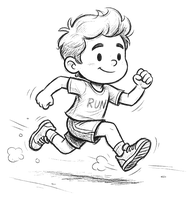

賽事紀錄
從報名到終點的完整紀錄
簡易版
+ 新增賽事
建立個人資訊
顯示
字體大小
小
中
大
介面風格
原本
›
深色模式
這個風格只有淺色
今日一句
語言
繁體中文
日本語
English
資料
匯入（Excel／JSON）
匯入 Excel
匯入備份（JSON）
匯出與備份（JSON／CSV／行事曆）
匯出完整備份（JSON）
匯出 CSV（扁平化）
下載 Python 分析套件（.ipynb）
匯出行事曆提醒（.ics檔）
範例資料

使用說明
意見回饋
隱私權政策與使用條款
清除全部資料
賽事
生涯數據
訓練
找賽事
清單
月曆
完賽牆
‹
›
今天
📥
放開以匯入檔案
支援 GPX／TCX／FIT 軌跡檔、JSON 備份、JPG／PNG 照片
✕